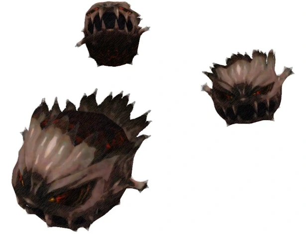

Level 75 reference · Zenith rules
|
Job: Notorious Monster |
 Image source |


|
Zone |
Level |
Drops |
Steal |
Spawns |
Notes |
|
56-57 |
1 |
A, L, S, M | |||
|
HP = Detects Low HP; M = Detects Magic; Sc = Follows by Scent; T(S) = True-sight; T(H) = True-hearing JA = Detects job abilities; WS = Detects weaponskills; Z(D) = Asleep in Daytime; Z(N) = Asleep at Nighttime | |||||
Notes:
- Spawned by trading a Clustered Tar to the ??? in the back of the cave at J-9; the cave entrance is at southeast corner of I-9. The ??? reappears 15 minutes after the NM dies.
- Item Drops: Soboro Sukehiro drops ~50% of the time. If you fight the NM on Firesday it seems to drop more frequently than 50%
- Killable by: A balanced group (mages, Paladin tank, melee with Ninja subjobs) of at least 6 characters in this level 50 capped area; Stun is necessary to prevent Self-Destruct.
- Special Attacks: Permanent Blaze Spikes, normal Cluster specials. Attacks per round are equal to the amount of bombs remaining in the Cluster i.e. Triple Attack at pop, Double Attack if one bomb Self-Destructs.
- About 10,000 HP.
Adapted from Eden Wiki: Unstable Cluster · Contributors and history · CC BY-SA 4.0. Revision 1653. Layout, links and optional background text adapted for Zenith.